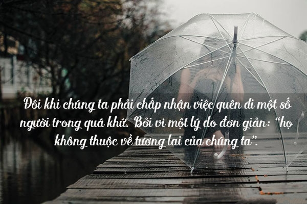
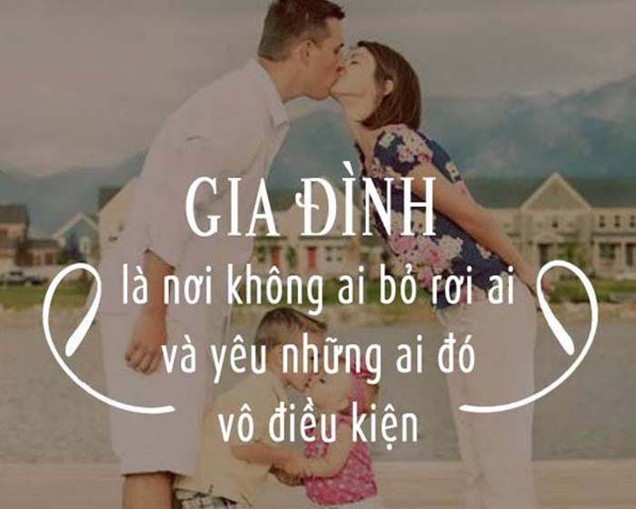
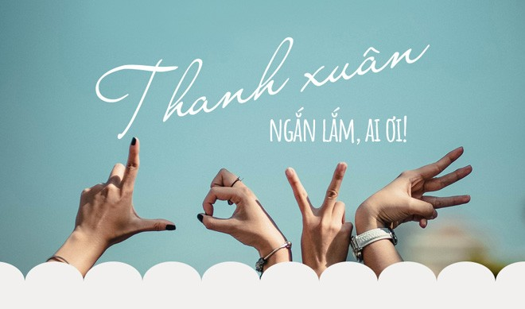
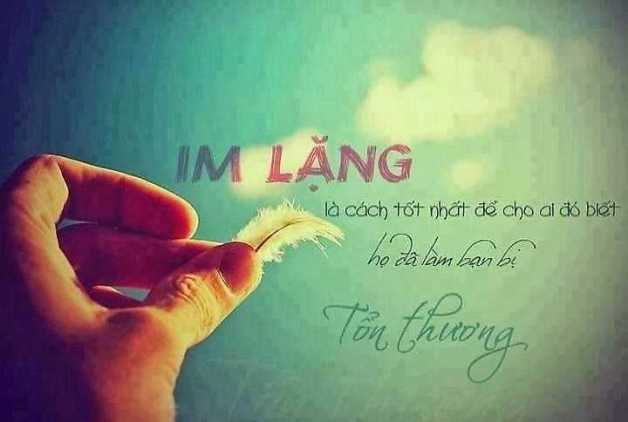
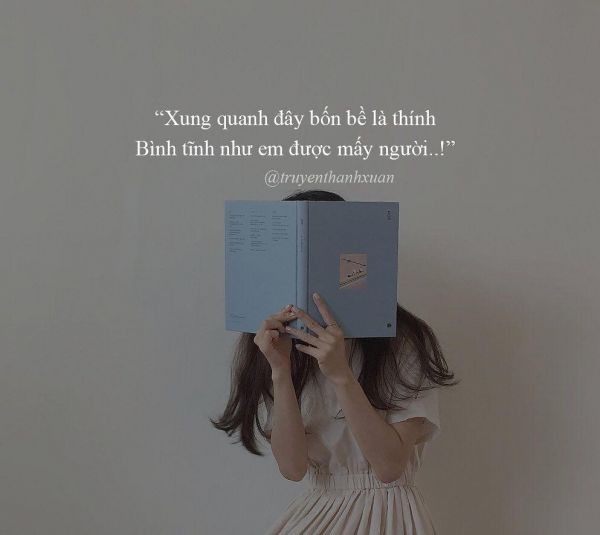
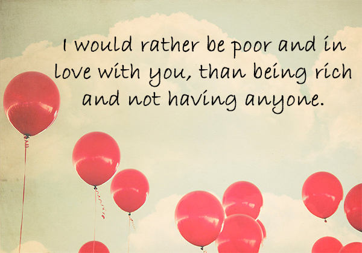

9999+ câu STT hay, CAP - TUS hay bất hủ mọi thời đại được SHARE nhiều nhất

Ty Nguyen
CEO ❤️ AhaChat. Love babies & chatbot.
Làm thế nào để mỗi hình ảnh, mỗi video bạn chia sẻ lên mạng xã hội thu hút được nhiều lượt tương tác. Nếu chỉ đăng riêng mỗi hình ảnh đẹp, video hay mà thiếu status, caption thì chưa đủ gây được sự ấn tượng và thú vị. Để giúp bạn có thêm ý tưởng mỗi khi đăng bài, tham khảo ngay 9999+ câu STT hay, CAP - TUS hay bất hủ mọi thời đại được SHARE nhiều nhất. Chắc chắn các bài đăng của bạn sẽ trở nên thú vị và thu hút được nhiều lượt tương tác hơn đấy nhé!.
Xem thêm:
- 999+ STT buồn, CAP tâm trạng, TUS ngắn cực HAY mọi lứa tuổi
- 999+ STT, CAP, TUS thả thính ngắn siêu HAY, ngọt ngào, dễ thương
- Những câu nói hay về tình yêu: STT, CAP, TUS đủ thể loại buồn vui
- 999+ STT vui, CAP hài hước, thả thính vui nhộn về tình yêu, cuộc sống
- 999+ STT hay chất như quả đất, CAP ngầu về tình yêu & cuộc sống
- Những câu nói hay về tình bạn: STT, CAP, TUS buồn vui đủ thể loại
- 9999+ Tên nick Facebook hay, ngầu, đẹp, chất cho Nam & Nữ
- Full 1001+ Icon Facebook 2020 mới nhất & Các biểu biểu tượng FB HOT
Tổng hợp những câu stt hay, cap hay bất hủ mọi thời đại

Những câu stt hay, cap hay bất hủ mọi thời đại mang theo những triết lý, phương châm sống vô cùng sâu sắc và ý nghĩa. Hãy cùng đọc, cùng ngẫm những câu stt hay, cap hay bất hủ bất hủ dưới đây để tìm thấy cho mình những danh ngôn, câu nói tâm đắc nhất nhé!
Một người bạn là người mỉm cười khi bạn cười, vui khi bạn vui, nhưng không khóc khi bạn khóc, vì khi ấy họ còn phải nắm tay và ôm lấy bạn.
Hãy đếm tuổi của bạn bằng số bạn bè chứ không phải số năm. Hãy đếm cuộc đời bạn bằng nụ cười chứ không phải bằng nước mắt.
Tất cả mọi thứ chỉ quý giá tại 2 thời điểm: Trước khi có được và sau khi mất đi.
Dùng thì đừng nghi, nghi thì đừng dùng.
Thể diện bạn có mua được bằng tiền hay không mà tại sao lại có nhiều người vẫn sống ảo với cái thể diện này. Bạn hãy sống và làm theo cảm nhận của mình mặt kệ người ta nói
Để có bạn bè, đầu tiên bạn phải làm một người bạn đã.
Niềm tin chính là bước đi bước đầu tiên ngay cả khi bạn không nhìn thấy toàn bộ chiếc cầu thang.
Đừng nên dùng những lời tuyệt tình để làm tổn thương đến người mà bạn yêu vào lúc tâm tình tồi tệ nhất.
Hãy xin lỗi bản thân của mình vì đã không biết quý trọng bản thân trong nhiều năm qua, vì thế hãy học cách yêu lấy mình đi nhé
Trong cuộc sống ai cũng phải có sự vấp ngã và đi theo hướng của nhiều người khác đề ra vì thế ông bà ta luôn có câu:
Cuộc đời có vô vàng mọi khó khăn và thủ thách cho nên mọi người sẽ nhìn nhận 1 vấn đề theo
Khi con người ta vẫn còn trên đời, tưởng rằng còn nhiều thời gian, nhiều cơ hội. Thực ra cuộc đời là phép trừ, gặp nhau một lần, ít đi một lần.
Ai cũng lắng nghe điều bạn phải nói. Bạn bè lắng nghe điều bạn nói. Bạn thân lắng nghe điều bạn không nói.
Một người bạn tốt sẽ nhìn thấy giọt nước mắt đầu tiên, lau đi giọt nước mắt thứ hai và ngăn lại giọt nước mắt thứ ba.
Cuộc sống thì có rất nhiều khó khăn và gian khổ, khi khó khăn không phải là không ai hiểu bạn mà chính bạn là người không hiểu chính mình
Hãy chậm rãi trong việc chọn bạn và càng chậm rãi trong việc thay bạn.
Một người bạn trung thành là tuyến phòng thủ mạnh mẽ và người tìm thấy anh ta đã tìm thấy một báu vật.
Lương thiện và thông minh là 2 thứ mà ông trời dành tặng cho bạn trong cuộc sống, nhưng phải biết vận dụng 2 thứ đó làm sao để có ích cho xã hội và bản thân chứ đừng vì 1 chút danh lợi mà đánh đổi tất cả
Người quan tâm đến tôi, tôi sẽ quan tâm lại gấp bội!
Phụ nữ không có sức hấp dẫn mới cảm thấy đàn ông trăng hoa. Đàn ông không có thực lực mới cảm thấy phụ nữ thực
Không nhìn điều sai trái, không nghe điều xằng bậy, không nói điều sai, không làm điều càn quấy.
Mọi thứ đều từ hư vô mà ra.
Cuộc sống cũng tương tự như một trò đấm bốc. Thất bại không được tuyên bố khi bạn ngã xuống mà là khi bạn từ chối “đứng dậy”!
Một đứa trẻ hỏi Thượng đế: “Nếu mọi thứ đều đã được viết vào số mệnh vậy tại sao con phải ước?”
Người không có nhận thức sâu xa sẽ có ngày sẽ gặp phiền muộn, âu lo.
Là phụ nữ không cần phải sắc đẹp toàn vẹn mà chỉ cần có 1 bờ vai nâng đỡ suốt cuộc đời
Bạn không bao giờ thực sự phân biệt được bạn và thù cho tới khi mặt băng vỡ.
Trong tình yêu và cuộc sống đôi khi luôn có cãi vã cho nên khi kết thúc cuộc cãi vã thì ai sẽ là người dỗ dành và xuống nước nhường nhịn trước. Đó chính là đàn ông đây là sự yêu thương mà họ dành cho người con gái của họ, điều này thể hiện thái độ khoan dung và độ lượng. Điều này không liên quan gì đến việc ai đúng ai sai, mà là tình yêu, là lòng bao dung, và cũng là trách nhiệm.
Đừng bao giờ chia sẻ những bí mật của bạn với bất cứ ai vì nó có thể hủy hoại bạn. Đây có lẽ là lời khuyên quan trọng nhất đời.
Chiếc túi rỗng dạy bạn một triệu điều trong cuộc sống nhưng chiếc túi đầy lại làm hỏng bạn trong một triệu cách.
Có trước mắt mà không biết trân trọng đến lúc mất rồi mới cảm thấy hối hận
Khi yêu hãy nên khoan dung và tiếp nhận những thói quen xấu của nhau để có thể đưa ra những thói quen chung tốt cho cả hai
“Cái tôi” chính là thứ duy nhất hủy hoại một mối quan hệ. Hãy là một người trưởng thành, buông bỏ cái tôi của chính mình.
Những người sai luôn dạy bạn những bài học đúng trong đời. Đó gọi là kinh nghiệm sống.
Người không quan tâm đến tôi, bạn dựa vào cái gì mà bảo tôi phải tiếp tục?
Đừng nghĩ họ nói được mà họ đã làm được, cứ tích lũy kinh nghiệm và đi theo con đường mình lựa chọn là sự lựa chọn thông minh và chính xác nhất
Người đàn ông yêu bạn là người phải biết từ bỏ những thứ quý giá gắn liền với cuộc sống của anh ấy, vì những thứ đó là những thứ gắn liền với cuộc đời anh ta. Cho nên khi quyết định lựa chọn ai thì các cô nàng hãy suy xét kỹ càng nhé
Trong cuộc sống có nhiều người tỏ vẻ ta đây quen biết rất nhiều người, nhưng khi gặp chuyện và hoạn nạn thì mới biết bạn quen chính xác được bao nhiêu người
Điều mình không thích thì đừng làm cho người khác. Đối với quê hương, gia đình nên tránh gây thù, chuốc oán.
Những người bạn giống như những ngôi sao. Họ đến rồi đi. Nhưng những người ở lại mới là những người tỏa sáng.
Đã có những lúc chúng ta không thể diễn tả được nỗi đau của mình, ngôn ngữ của một người bạn còn có ý nghĩa hơn những gì được nói ra.
Cuộc đời vốn dĩ có rất nhiều thứ mà mọi người không bao giờ lường trước được, người luôn quan tâm yêu thương chiều chuộng bạn thì bạn không thèm, ngược lại những người làm bạn luôn luôn thờ ơ thì mãi theo đuổi họ, cuối cùng người bị tổn thương nhất chính là bạn, cho nên hãy nhớ kỹ điều này nhé
Đừng bao giờ bình luận 1 con người bằng vẻ bề ngoài của họ mà phải tiếp xúc thì mới cảm nhận hết được
cách suy nghĩ và cảm nhận riêng cho nên hãy luôn luôn tự nhắn nhủ với bản thân rằng : hãy luôn luôn sống thoải mái, vui vẻ , hạnh phúc và lạc quan hơn nhé
Đừng kể rắc rối của bạn cho bất cứ ai. 20% chẳng quan tâm, còn 80% thì vui mừng vì bạn gặp chuyện.
Mất đi một người bạn cũng như mất đi một cánh tay. Thời gian có thể chữa lành nỗi đau nhưng sự thiếu hụt không bao giờ được lấp đầy.
Bạn là người ta cảm thấy thoải mái khi ở cùng, ta sẵn lòng trung thành, đem lại cho ta lời chúc phúc và ta cảm thấy biết ơn vì có họ trong đời.
Không ai có thể hạnh phúc mà không có bạn bè, hay chắc chắn về bạn bè mình cho tới khi gặp bất hạnh.
Tất cả những khó khăn trong cuộc đời đều được gói gọn trong 12 chữ cho nên mọi người cần lưu ý nhé : Không buông được, nghĩ không thông, nhìn không thấu, quên không nổi!
Con người luôn luôn có 2 bề mặt, người luôn luôn tươi cười trước nhiều người, là người luôn căng thẳng về 1 vấn đề nào đó cho nên mọi người luôn luôn yêu thương những người này nhé!
STT - TUS - CAP hay về cuộc sống gia đình

Gia đình là nơi ta lớn lên, trưởng thành, là nơi ta được yêu thương, chăm sóc, là chỗ dựa vững chắc, là nơi dừng chân thích hợp nhất cho bất kỳ một ai. Vốn dĩ, chúng ta không có quyền lựa chọn gia đình của mình nhưng để có một gia đình hạnh phúc hay không là do ta quyết định. Những STT - TUS - CAP hay về cuộc sống gia đình ít nhiều giúp chúng ta nhận ra giá trị của gia đình và biết trân trọng gia đình mình hơn. Nếu bạn đang mất niềm tin vào gia đình thì những câu stt hay, cap hay về cuộc sống gia đình sẽ giúp bạn lấy lại động lực. Cùng nuôi dưỡng cảm xúc tâm hồn của bạn về gia đình qua những câu nói bất hủ dưới đây nhé
Hãy nhớ rằng, dù bạn có đi đến bất cứ đâu, bạn vẫn có thể trở lại với chính ngôi nhà của mình.
Gia đình chính là trường học của lòng khoan dung lớn nhất, vì nó luôn tồn tại và dạy chúng ta cách sống với những người khác.
Chẳng bao giờ có loại thuốc bổ chữa được những căn bệnh xã hội hữu hiệu tốt hơn một mái ấm khỏe khoắn và hạnh phúc. Chẳng bao giờ có nguồn ổn định xã hội lớn hơn một gia đình yêu thương và biết cảm thông. Chẳng bao giờ có cách giúp trẻ em hạnh phúc tốt hơn lời tâm tình của bậc cha mẹ sáng suốt và trìu mến.
Cuối cùng cũng chỉ có tình cảm gia đình là tình yêu vô điều kiện duy nhất trong cuộc đời.
Duy chỉ có ở nơi gia đình, người ta mới tìm được chốn nương thân để chống lại những tai ương của số mệnh.
Không sự nghiệp nào bằng sự nghiệp gia đình, và gia đình chính là sự nghiệp cuối cùng. Tất cả các sự nghiệp khác đều phục vụ cho mục đích – đó chính là gia đình.
Gia đình không phải là việc bạn mang dòng máu của ai mà là việc bạn yêu thương, chia sẻ thông cảm và quan tâm đến ai.
Tình yêu bắt đầu ở nhà; tình yêu sống trong nhà, và đó là vì sao thế giới hôm nay lại nhiều khổ đau và bất hạnh đến như thế… Con người ngày nay dường như ai cũng quá vội vã, lo lắng muốn đạt được những bước tiến xa hơn và của cải nhiều hơn, và đại loại như thế, đến nỗi con cái có quá ít thời gian với cha mẹ mình. Cha mẹ chúng có quá ít thời gian dành cho nhau, và hòa bình thế giới bị chia cắt bắt đầu từ mái ấm.
Gia đình – người ta có nhiều nơi để đến nhưng chỉ có một chốn để quay về.
Gia đình là một cái tên, một ngôn từ mạnh mẽ; mạnh hơn lời của những pháp sư hay tiếng đáp của các linh hồn; đó là lời nguyện cầu hùng mạnh nhất.
Hãy dành nhiều thời gian cho gia đình mình ngay cả khi bạn không hề biết điều gì đã và đang xảy đến với cuộc đời của mình phía trước.
Có một nơi mà bạn có thể về bất cứ lúc nào đó chính là nhà. Có những người để yêu thương, chia sẻ đó là gia đình. Khi bạn có cả hai điều đó chính là hạnh phúc.
Gia đình không phải một điều gì đó quan trọng, mà nó là tất cả mọi thứ.
Có một nơi để về, đó là nhà Có những người yêu thương, đó là gia đình Có được cả 2, đó là hạnh phúc
Gia đình hạnh phúc là thiên đường tới sớm với ta.
Ngôi nhà thiếu đi tiếng cười là ngôi nhà có nhiều phiền muộn.
Gia đình là nơi tốt nhất mà bạn tìm về với bình yên
Gia đình là nơi cuộc sống bắt đầu và tình yêu không bao giờ kết thúc
Gia đình là nơi bạn có thể sống thật nhất với con người của mình mà không cần tạo ra bất cứ vỏ bọc nào cả.
Gia đình chính là món quà của cuộc đời – thứ luôn tồn tại và mãi mãi
Hãy lấp đầy ngôi nhà của chính mình bằng tình yêu và nó sẽ trở thành gia đình đúng nghĩa.
Bạn được sinh ra trong một gia đình, và gia đình sẽ được sinh ra từ bạn. Không thể quay lại. Không thể tráo đổi.
Gia đình là nơi đã trang bị cho bạn hành trang quý giá nhất để bạn bước vào ngưỡng cửa cuộc đời.
Cuối cùng vẫn chỉ có tình cảm gia đình là thứ tình yêu vô điều kiện duy nhất trong cuộc đời mỗi con người.
Gia đình là thứ tồn tại duy nhất, còn những thứ khác có hay không cũng không quan trọng.
Gia đình không phải là việc bạn mang dòng máu của ai mà là việc bạn yêu thương chia sẻ cảm thông và quan tâm đến ai!!!
Gia đình là tế bào xã hội, còn tiền bạc và sự chung thủy là chất nguyên sinh của gia đình.
Gia đình là một cái tên, một ngôn từ mạnh mẽ; mạnh hơn lời của những pháp sư hay tiếng đáp của các linh hồn; đó là lời nguyện cầu hùng mạnh nhất.
Hãy dành thời gian cho gia đình ngay cả khi bạn không hề biết điều gì đã và đang xảy đến với cuộc sống của mình.
Tiền có thể mua được một ngôi nhà nhưng không thể mua được một tổ ấm.
Ở điểm cuối của cuộc đời, bạn sẽ không bao giờ nuối tiếc chuyện không vượt qua thêm một bài thi, chiến thắng thêm một tranh chấp, hay hoàn thành thêm một việc kinh doanh. Bạn sẽ nuối tiếc đã không sử dụng thời gian để ở bên cạnh vợ chồng, bạn bè, con cái, hay cha mẹ mình.
Khi bạn nhìn lại cuộc đời mình, những niềm hạnh phúc nhất chính là những niềm hạnh phúc gia đình.
Gia đình là nơi tốt nhất mà bạn tìm về với bình yên
Là nơi có thể giúp bạn nghỉ ngơi khi vấp ngã
Là nơi yêu thương mà không cần điều kiện
Là nơi có cuộc sống tốt nhất để tạo nên vỏ bọc bảo vệ.Tất cả kho báu trên Trái đất không thể nào sánh bằng hạnh phúc gia đình.
Gia đình là gì? Đó là tình mến sợ cha, tình yêu mến mẹ, kính trọng thán phục nhân đức của cả cha lẫn mẹ, bỏ qua lỗi lầm, ghi nhớ công ơn, thông cảm nỗi đau khổ, cảm kích sự hy sinh của cha mẹ.
Bạn có thể có rất nhiều bạn bè nhưng bạn chỉ có một gia đình duy nhất.
Luôn luôn có lúc con người mệt mỏi bởi công việc, sự cống hiến cho bổn phận, và tất cả những gì anh ta muốn là gương mặt mình yêu, sự ấm áp và điều kỳ diệu của một trái tim yêu thương.
Lòng nhân đức bắt đầu từ gia đình, nhưng không nên kết thúc luôn ở đó.
Thứ đẹp nhất cũng là thứ đau khổ nhất đó chính là tình yêu! Thứ cao quý nhất, cũng là thứ ti tiện nhất chính là hôn nhân và gia đình.
Điều bất ngờ nhất cuộc sống chính là nỗi đau luôn đến từ những người mà mình tin tưởng nhất.
Nhiều cuộc hôn nhân sẽ trở nên hạnh phúc hơn nếu người chồng hoặc người vợ hiểu và thông cảm cho nhau hơn.
Khi mọi thứ có thể trở nên tồi tệ, chỉ có một vài người đứng bên bạn mà không hề do dự, suy nghĩ đó chính là gia đình.
Còn điều gì tốt đẹp hơn mà cha mẹ và con cái có thể trao cho nhau ngoài sự quan tâm tôn trọng và thấu hiểu.
Trong một gia đình được coi là hoàn hảo thì vẫn có những cãi vã và vẫn có chiến tranh, thậm chí là sự lạnh lùng trong khoảng thời gian dài. Nhưng cuối cùng, gia đình vẫn là gia đình… nơi tình yêu luôn hiện hữu.
Với chúng ta, gia đình nghĩa là vòng tay ôm lấy nhau và luôn ở bên nhau.
Sự vô ơn là điều đáng khinh nhất, nhưng kiểu vô ơn phổ biến và lâu đời nhất là sự vô ơn của con cái đối với cha mẹ.
Không gì có thể so sánh bằng niềm vui của gia đình.
Chỉ có những ai đi học, đi làm xa mới hiểu cảnh mua vé xe về quê ăn tết với gia đình.
Trên thế giới này gia đình là điều quan trọng nhất.
Cuộc sống vốn dĩ không bao giờ công bằng, vì vậy hãy tập quen dần với điều đó
Khả năng tìm được cái đẹp trong những điều nhỏ bé nhất khiến gia đình trở nên hạnh phúc và cuộc đời trở nên đáng yêu.
Đắng cay cũng thể ruột rà,
Ngọt ngào cho lắm cũng là người dưng.
Hãy củng cố bản thân mình bằng tình yêu với gia đình nhỏ bé.
Những tiếng khóc của trẻ thơ gây đau đớn và ám ảnh hơn rất nhiều những cơn tức giận của người trưởng thành.
Nếu ta không nuông nấng cha mẹ lúc còn sống thì có ích gì mà cúng tế khi đã chết.
Cách trị nhà cốt ở hoà thuận, cách mưu sinh cốt ở siêng năng.
Đến cuối ngày, một gia đình tràn đầy tình yêu thương nên thấy mọi chuyện đều có thể tha thứ.
Đừng gây bất lợi cho con cái bạn bằng việc cho chúng cuộc sống dễ dàng.
Người rơi nước mắt nhiều nhất vì bạn là cha mẹ, người cười nhiều nhất vì bạn cũng là cha mẹ.
Nhà không cần quá lớn, miễn là trong đó có đủ yêu thương.
Trong cuộc sống, ai cũng cần ít nhất một điểm tựa, điểm tựa đó là niềm tin, sự kì vọng, mục đích, tình yêu… và một điểm tựa vững chất đó chính là gia đình bạn.
Khi bạn đang uống coca giải khát, hãy nghĩ xem bố mẹ thường uống gì. Khi bạn mặc những bộ quần áo đắt tiền hàng hiệu, xin hãy nghĩ xem bố mẹ bạn thường mặc ra sao. Khi bạn thoải mái tiêu pha, hãy nghĩ đến những thứ đồ bố mẹ bạn hay dùng như thế nào. Bố mẹ đã vì chúng ta mà bỏ bao công sức? Rơi bao hạt mồ hôi, đều chỉ vì mong chúng ta có một cuộc sống tốt đẹp hơn. Những thứ chúng ta đang dùng đều là do hai bàn tay cha mẹ đem về cho. Xin hãy yêu quý bố mẹ của riêng mình, làm một người con hiếu thuận.
Im lặng chính là cách tốt nhất lúc tâm trạng buồn chán để nhận ra ai là người cần ta và bên cạnh ta.
Gia đình là nơi cuộc sống bắt đầu và tình yêu không bao giờ kết thúc.
Gia đình là nơi bạn có thể sống thật nhất mà không phải tạo cho mình một vỏ bọc nào cả.
Gia đình là duy nhất trên cuộc đời mà không gì có thể thay thế được, và cho dù bạn có đi bất cứ nơi đâu thì đây cũng là nơi duy nhất chờ mong bạn trở về.
STT - TUS hay về tình yêu đôi lứa, thanh xuân, tuổi trẻ lãng mạn

Nếu bạn là người đang yêu, sẽ yêu, được yêu và mong muốn tình yêu của mình lớn dần theo từng ngày hay những bạn đang có khúc mắc trong tình yêu thì tham khảo ngay những câu stt - tus hay về tình yêu đôi lứa, thanh xuân, tuổi trẻ lãng mạn dưới đây nhé!
Tình yêu biến những điều vô nghĩa của cuộc đời thành những gì có ý nghĩa, làm cho những bất hạnh trở thành hạnh phúc.
Nếu khoảng cách giữa chúng ta là một nghìn bước, em chỉ cần bước 1 bước, 999 bước còn lại anh sẽ chạy đến cùng em.
Em à, anh đã bị cảm nắng và bệnh đã rất nặng rồi. Liều thuốc duy nhất có thể cứu anh bây giờ là được nhìn thấy ánh mắt, nụ cười hoặc chỉ cần một tình yêu nhỏ em dành cho anh.
Đôi khi con người cứ mải mê theo đuổi hạnh phúc xa vời, để rồi một ngày chợt nhận ra rằng hạnh phúc đang ở ngay dưới chân mình. Nhưng lại không có đủ dũng cảm để cúi xuống và nhặt nó lên.
Duyên do trời định, phận do trời tạo nhưng hạnh phúc là do chính bản thân mình tạo ra. Hãy nhớ và trân trọng điều đó nhé!
Anh xin tặng em cả đại dương hoa hồng thắm. Tình yêu ấy sẽ mãi mãi như hoa tươi trao cho em chỉ cuộc đời này. Và xin tặng em cả dòng máu nóng trái tim này.
Nếu khoảng cách giữa chúng ta là một nghìn bước, em chỉ cần bước 1 bước, 999 bước còn lại anh sẽ chạy đến cùng em.
Hạnh phúc… không phải là được nhiều người yêu. Mà là được được một người yêu rất nhiều!
Hạnh phúc giống như bong bóng xà phòng. Nó thật đẹp nhưng cũng thật mong manh, dễ vỡ.
Tôi yêu người ấy bằng thứ tình cảm chân thành nhất, chỉ cần người đó không buông tay thì dù trái đất này có ngừng quay tôi cũng không bao giờ buông tay người ấy.
Hạnh phúc… không phải là được nhiều người yêu. Mà là được được một người yêu rất nhiều!
Trong yêu đương cũng như ở trong giấc mộng, không có gì gọi là không thể được.
Tình yêu lớn không phải là yêu nhiều người, mà là yêu một người và yêu suốt đời.
Em sợ quá anh ơi, chắc em phải đi khám bác sĩ thôi. Chẳng hiểu sao cả tuần qua trong đầu em chỉ luôn hiện lên hình bóng anh và tim em đập thình thịch khi nghe thấy giọng nói của anh. Chắc em yêu anh quá mất rồi.
Yêu một người là nghĩ về người đó cuối cùng trước khi đi ngủ và nhớ về người đó đầu tiên khi tỉnh dậy.
Buồn cười thay! Người ta thường không trân trọng những gì mình có. Nhưng lại thích… dòm ngó những cái không thuộc về mình.
Yêu một người là nghĩ về người đó cuối cùng trước khi đi ngủ và nhớ về người đó đầu tiên khi tỉnh dậy.
Khi còn trẻ, hãy trải nghiệm vì đã trải qua rồi thì không có cách nào để quay đầu đi lại. Bạn chỉ còn cách nhìn lại và mỉm cười. Vậy thì hãy sống cho mình một tuổi trẻ thật tươi đẹp, để khi nhìn lại, bạn có thể mỉm cười hạnh phúc.
Khi đã trưởng thành, sẽ có đôi lúc, chúng ta nhớ lại thời gian thanh xuân tươi đẹp mà cũng đầy đau buồn ấy, và mỉm cười, thật nhẹ nhàng và thanh thản.
Chẳng ai cấm tuổi trẻ không được sai, nhưng tuổi trẻ cũng chẳng dài để cho ta sai mãi.
Có những người chết ở tuổi 25 và chỉ đến 75 tuổi mới được chôn.
Tuổi thanh xuân là tuổi đẹp nhất, đáng quý nhất của mỗi chúng ta. Tại thời điểm ấy, cũng chính vì ta chưa đủ lớn khôn, trưởng thành, mà ta lại có thể sống là chính mình, làm những điều mình muốn. Quả thật, nếu được chọn, ta vẫn muốn chìm đắm trong tuổi thanh xuân lần thứ hai.
Tuổi thanh xuân quãng thời gian đầy khó khăn, chúng ta loay hoay tìm mục đích sống, định hướng cuộc đời. Mải mê tìm kiếm cũng là lúc chúng ta trưởng thành trong cuộc sống.
Tuổi thanh xuân và tươi đẹp, nhưng tuổi thanh xuân của một người có thể bình thản, cũng có thể rực lửa anh hùng; có thể trôi qua vô vị để rồi hối tiếc, cũng có thể bước tiếp những bước vững vàng tới tuổi thanh xuân huy hoàng tráng lệ.
Và đã có bao nhiêu ước mơ không thành trên chuyến tàu thanh xuân ấy. Vì có những sân ga không như lòng đã nghĩ… Vì có những gió giông cản lối khiến hao hụt niềm tin.
Tuổi thanh xuân của tôi có người ấy, người ấy mãi là một phần kí ức đẹp đẽ trong tôi. Mỗi khi nhớ về lòng mỉm cười và thanh thản.
Tình yêu đầu không chỉ là một hồi ức đẹp của tuổi trẻ mà nó còn có sức mạnh thay đổi cuộc đời một con người.
Thanh xuân là chiếc hộp diệu kỳ mà ta giấu trong đó. Cơn cảm nắng đầu tên và cả nụ hôn bối rối vụng về.
Người ta thường nói thanh xuân không bao giờ là mãi mãi, nhưng khi ấy chúng ta đã sống bằng tất cả những gì tốt nhất mà ta đã có.
Tuổi trẻ thời gian của ước mơ, hoài bão. Nơi đó lưu giữ những điều tuyệt vời nhất của cuộc đời.Nhưng mọi thứ rồi cũng sẽ trôi qua, ta cũng sẽ đi tìm những đáp án riêng của cuộc đời dẫu cho không phải đáp án nào cũng hoàn hảo.
Tuổi trẻ và sự thiếu kinh nghiệm thường để lạc con tim.
Tuổi trẻ luôn khiến ta nhớ về và luyến tiếc. Tiếc cho một tuổi trẻ đã qua và mong ước một lần được trẻ lại. Dù rằng không có lần thứ hai.
Nếu tuổi trẻ không phát ra ánh sáng rực rỡ, mọi thứ sẽ mất đi sức hút.
Muốn ăn gì thì cứ ăn, chơi thì cứ chơi. Con gái có thể sống được mấy lần tuổi trẻ.
Hi vọng sẽ giúp bạn trẻ ra vì hi vọng và tuổi trẻ là anh em song sinh.
Khi ta trẻ ta theo đuổi niềm đam mê, khi ta già đi ta chợt nhớ về tuổi thanh xuân và sự hoài niệm về quá khứ ngày xưa.
Tuổi thanh xuân là bước đệm quan trọng nhất trong cuộc sống.Nó nằm ở những gì bạn đã trải qua trong tuổi thanh xuân. Có những điều, những sự việc, những con 38. Tuổi trẻ của mỗi chúng ta chẳng ai giống nhau, có thể tươi đẹp hoặc sóng gió triền miên nhưng đọng lại là những kí ức mãi mãi không thể nào xóa nhòa.
Tuổi thanh xuân của tôi có lười biếng, trốn học, có gia đình và có cả cậu ấy – tuổi thơ đẹp đã của tôi ơi.
Tuổi thanh xuân giống như một cơn mưa rào, dù cho bạn từng bi cảm lạnh vì tắm mưa thì bạn vẫn muốn được đắm mình trong cơn mưa ấy lần nữa.
Ai cũng có một tuổi trẻ, dù êm đềm hay dữ dội, dù hạnh phúc hay khổ đau tất cả đều gói gọn trong 3 chữ “tuổi thanh xuân”.
Nếu ai đấy hỏi tôi có gì lúc này, tôi sẽ chỉ có một câu trả lời: “Tôi có thanh xuân”.
Tuổi trẻ chỉ đến một lần, ai rồi cũng phải rời xa quãng thời gian đó. Nhớ tuổi trẻ, nhớ về nó như một kỷ niệm và quá khứ.
Tuổi thanh xuân như cơn gió mát thoảng qua, chưa kịp nhận ra đã lìa xa chúng ta. Cơn gió đó đến rồi đi và chẳng bao giờ quay lại.
Hãy sống thật xứng đáng để những tháng ngày thanh xuân không trở nên lãng phí.
Thanh xuân đôi khi lại chẳng phải là thời gian, mà là khoảng cách.
Nếu thời thanh xuân của bạn quá yên bình, thì khi gặp sóng gió trong quãng đời kế tiếp bạn sẽ dễ dàng chới với và không có điểm tựa.
Tuổi trẻ là tuổi của sự hi vọng, hoài bão và ước mơ. Cuộc đời của bạn sẽ không còn có khả năng tỏa sáng thêm một lần nào nữa. Vì vậy, dù điên cuồng thế nào, hãy cùng làm đi nhé!
Trong kẽ hở của thời gian và hiện thực, tuổi xuân cũng như sắc đẹp, mỏng manh như trang giấy bị gió hong khô.
Tình yêu đầu là một kỉ niệm đẹp, sâu sắc, nhưng lại dễ dàng mang nhiều tiếc nuối. Bất cứ ai bước ra từ tình yêu đầu, họ cũng sẽ mạnh mẽ và trưởng thành hơn. Bởi, tình yêu đầu đã mang theo sự ngây thơ nhất của tuổi trẻ.
Đã từng khao khát ôm ấp trọn một nửa yêu thương vào lòng nhưng rốt cuộc họ chỉ là người đi ngang cuộc đời ta.
Tình yêu không có cột mốc, không có khái niệm cụ thể, cũng không có khoảng thời gian cụ thể. Nhưng, tình yêu bắt nguồn từ thời thanh xuân. Trong thời thanh xuân, nó chứa đựng lần đầu ta biết yêu. Nó gói trong đó người mà ta từng thương từng cảm nắng.
Với tất cả mọi người, tuổi trẻ là mùa hân hoan của cuộc đời; nhưng thường chỉ bởi điều mà nó hy vọng, không phải bởi điều mà nó giành được, hay điều mà nó trốn thoát.
Giá mà thanh xuân không quá bình yên và phẳng lặng, tôi nhất định sẽ kể cho bạn nghe được rất nhiều thứ thú vị. Giá mà… Điều ấy thật đáng tiếc.
Tuổi trẻ và hi vọng vốn đã tồn tại cùng nhau ngay từ lúc bắt đầu. Chẳng có gì lạ khi người ta nói, tuổi trẻ là tuổi của ước mơ và hoài bão. Tuổi của những hi vọng tương lai. Tuổi của những khát vọng ngông cuồng. Thế nhưng, chẳng có gì phải phàn nàn về tuổi trẻ cả. Vì hy vọng là sức mạnh của con người.
Khi thanh xuân, người ta vui chơi, yêu đương và làm những điều rồ dại. Người ta vẫn lớn lên mỗi ngày, sai lầm, đứng dậy, đi tiếp.
Tuổi trẻ mà hãy tỏa sáng rực rỡ, cháy một lần thôi và sẽ mãi mãi không bao giờ quên.
Tuổi trẻ là tuổi bồng bột, tuổi trẻ cũng là tuổi dễ bị lạc lối. Nhưng, đừng lo lắng và e ngại sai lầm của tuổi trẻ. Vì đó chính là bài học cho chính bạn để trưởng thành. Đó là kí ức đẹp cho những lần yêu đầu tiên: Cái chạm tay nhẹ đầy rung động, một cái ôm ấm áp hay một nụ hôn đầu đầy bỡ ngỡ, thẹn thùng. Tất cả, đều được gói trong tuổi thanh xuân của bạn.
Tuổi thanh xuân tươi đẹp, thời gian quý báu của cuộc đời, hãy sống tự do hết mình.
Tuổi thanh xuân quãng thời gian tươi đẹp nhất để con người hoài niệm. Khi ta ôm ấp nó vào lòng, nó sẽ chẳng có giá trị, khi ta xa rời nó tất cả mới có ý nghĩa. Những người đã từng yêu và làm tổn thương chúng ta đều nằm trong kí ức của ta.
Điều đẹp đẽ không phải tuổi thanh xuân mà là trong tuổi thanh xuân đó có họ.
Khi còn trẻ, đắc ý thất ý đều không đáng là gì, những con người chưa bị cuộc đời, chưa bị chững chạc xâm thực này, không tin trên đời có lực bất tòng tâm, không tin ngày mai sẽ không tươi đẹp, không tin tương lai không thuộc về họ.
Có những người, họ đã chết đi tại cái độ tuổi thanh xuân ấy, với những lối mòn và tư tưởng cũ kĩ. Họ đã để bản thân mình mang xiềng xích. Tự bó buộc mình vào cái thế giới đang sống. Không còn hi vọng, không còn ước mơ, hoài bão, không còn động lực và mục tiêu ở tương lai.
Khi tuổi thanh xuân phơi[phới sức sống bạn sẽ mải mê đi tìm lời đáp cho nhiều câu hỏi trong cuộc đời, nhưng khi thời gian trôi đi bạn lớn tuổi sẽ hiểu ra rằng không phải câu trả lời nào cũng có đáp án trọn vẹn.
Cái gì đã qua rồi thì nên là dĩ vãng, có lưu luyến cũng chẳng thể níu kéo được nữa. Vậy nên, những điều bạn nên làm hôm nay chính là đừng để thanh xuân nằm lại trong nuối tiếc.
Học không chơi đánh rơi tuổi trẻ, chơi không học thấy khỏe hẳn ra.
Tình yêu trong quãng đời thanh xuân chính là sự vô tư và trong sáng. Hãy luôn ghi nhớ và quý trọng tình yêu ấy.
STT - TUS hay về tâm trạng buồn & đau thương

Trong cuộc sống của chúng ta, không chỉ gặp những niềm vui mà đôi lúc còn cả những nỗi buồn và sự cô đơn. Và không phải lúc nào gặp tâm trạng buồn bạn cũng có thể chia sẻ với người thân, bạn bè hay đồng nghiệp. Và cũng không phải sự đau thương, cô đơn nào bạn cũng có thể vượt qua được. Bởi vậy, lúc này cách giúp bạn giải tỏa được tâm trạng, tìm được sự đồng điệu qua những stt - tus hay về tâm trạng buồn & đau thương, cùng cảm nhận nhé.
Tôi không hối hận về quá khứ, nó làm tôi mạnh mẽ hơn, nhưng tôi hối hận vì khoảng thời gian mất đi tôi đã dành cho một người không đúng.
Hãy nhìn ra thế giới xung quanh để thấy rằng bạn vẫn còn rất hạnh phúc so với những đau khổ mà người khác đang phải gánh chịu.
Sự chia sẻ và tình yêu thương là điều quý giá nhất trên đời.
Người ta có thể quên đi điều bạn nói, nhưng những gì bạn để lại trong lòng họ thì ko bao giờ nhạt phai.
Điều tồi tệ nhất trong cuộc sống không phải là đơn độc. Mà điều tồi tệ nhất chính là ở bên một người nhưng lúc nào cũng cảm thấy thật đơn độc.
Có khi nào xung quanh vẫn luôn có rất nhiều người thực lòng yêu thương ta nhưng sâu bên trong ta vẫn thấy đơn độc lẻ loi
Đừng lợi dụng nhau lúc cảm thấy cô đơn, rồi ngoảnh mặt làm ngơ khi thấy mình đã ổn.
Trong cuộc sống, nơi nào có một người chiến thắng, nơi đó có một người thua cuộc. Nhưng người biết hi sinh vì người khác luôn luôn là người chiến thắng.
Tình yêu của anh nhẹ nhàng như gió, mỏng manh như nắng. Và rồi để lại cho em cay đắng ngút ngàn.
Tình yêu và hạnh phúc giống như những hạt mưa vậy. Trông thấy nhiều nhưng đưa tay giữ lấy chúng không dễ dàng.
Điều khiến con người ta bẽ bàng và kinh hoàng nhất chính là sự im lặng.
Đôi khi chúng ta phải chấp nhận việc QUÊN đi một số người trong QUÁ KHỨ.
Ko tin vào chính mình – tức là bạn đã thất bại một nửa trước khi bắt đầu.
Khi không còn vị trí đặc biệt trong lòng ai đó. Tốt nhất ta nên chọn cách im lặng và ra đi.
Thật dễ nuối tiếc về một điều gì đó đã mất đi nhưng sẽ rất khó nhận ra và trân trọng những gì ta đang có…
Nếu bạn không thể xây dựng một thành phố thì hãy xây lấy một trái tim hồng.
Cuộc sống ko bao giờ là bế tắc thực sự hay có khái niệm mất tất cả một khi bạn còn có niềm tin.
Khi bạn biết được rằng bạn muốn dành trọn thời gian còn lại của cuộc đời bên cạnh một ai đó, bạn chỉ muốn bắt đầu càng sớm càng tốt.
Cho dù hoàn cảnh hiện tại có tồi tệ thế nào đi nữa, sẽ ko có thời điểm nào cho sự bắt đầu tốt hơn là ngay từ bây giờ.
Khi đã hết duyên, hết nợ, cho dù ở cùng một thành phố, hít thở cùng một bầu không khí, cũng không dễ dàng gặp được nhau.
Khi yêu sợ nhất là người ta vẫn nhận lời yêu nhưng trong tim họ mình không hề tồn tại.
Mưa ngừng rơi chắc gì trời đã tạnh, chia tay em rồi chắc gì đã hết yêu!
Mối tình đầu luôn đẹp hoàn mỹ. Cho đến khi một trong hai người tìm thấy……………mối tình thứ hai.
Đi qua những ngày mưa để yêu thêm những ngày nắng.
Nơi anh nắng rồi à? Nơi em thì vẫn mưa. Anh thương ai rồi à? Còn em thì vẫn chưa.
Tôi tìm ai giữa một trời chen nắng? Ai tìm tôi giữa phố vắng đong mưa?
Mưa thì mát mà sao tạt vào mặt thì rát. Yêu thì hạnh phúc mà kết thúc thì đâu khổ.
Mưa hối hả xóa đi nắng mùa hạ. Em hối hả xóa tất cả về anh.
Tình yêu không có lỗi, lỗi là do hai người yêu nhau mà không biết đến hai chữ VÌ NHAU.
Tình yêu không cần phải hoàn hảo, nó chỉ cần chân thật.
Tôi đã luôn tin rằng trên đời này tình yêu thật lòng thật dạ vẫn còn tồn tại, khi mình quan tâm và thương yêu ai đó bằng cả tấm lòng. Thế nhưng, tất cả những gì xảy ra trước mắt tôi hôm nay đã khiến niềm tin trong tối vụn vỡ mất rồi. Thất vọng!
Em mỉm cười tươi như nắng, nhưng lòng em thì mưa không ngớt anh à. Chắc sẽ không bao giờ em mỉm cười như thế nữa đâu.
Cơn mưa chiều nay sao vô tình đến thế, ướt lối em về nước mắt khẽ tuôn rơi.
Niềm tin là một sức mạnh có thể biến điều ko thể thành điều có thể.
Những kí ức và kỉ niệm đẹp sẽ giúp con người vượt qua những thử thách của cuộc sống.
Đau khổ nhất là khi yêu ai đó, thương ai đó mà không thể ở bên, không thể nói ra nỗi lòng của mình với người ấy.
Nỗi buồn lớn nhất là cố tỏ ra hạnh phúc. Nỗi đau lớn nhất là luôn cố gắng mỉm cười.
Bây giờ tôi mới đau khổ nhận ra một sự thật là có những người chỉ có thể ở trong tim ta chứ không bao giờ có thể bước cùng ta đi đến cuối cuộc đời.
Lạc quan là hạt giống gieo trồng trên mảnh đất của niềm tin; bi quan là hạt giống cất giữ dưới căn hầm ngờ vực.
Cố quên một người ta đã từng yêu cũng giống như cố nhớ một người mà ta chưa từng gặp.
Người lạc quan là người nhìn đâu cũng thấy đèn xanh còn người bi quan thấy khắp nơi chỉ toàn đèn đỏ… kẻ thực sự khôn ngoan thì mù màu.
Cuộc sống đầy ắp những việc không như ý, chẳng thể nào né tránh, điều duy nhất có thể làm là thay đổi cách nhìn về nó.
Có những lúc trong cuộc sống bạn không biết mình muốn gì, cần gì. Đó là những lúc cuộc sống buồn nhất.
Tình yêu bắt đầu với nụ cười, lớn lên với nụ hôn, và kết thúc bằng giọt nước mắt.
Thà rằng cô đơn vì không yêu ai cả…còn hơn yêu ai đó mà vẫn cô đơn.
Nếu bạn buồn hãy gấp nó lại thành một ngôi sao nhỏ. Cho vào lọ để cất giữ nó cho riêng mình.
Cuộc sống chính là một chiếc hộp có nhiều ngăn. Những ngăn đó mang tên: hạnh phúc- đau đớn. niềm vui- nỗi buồn.
Em sẽ không để ý tới quá khứ của anh. Nhưng đừng biến em thành kẻ ngốc hay một người thay thế thứ ba.
Tình yêu của anh – Nhẹ nhàng như gió, mỏng manh như nắng – Và rồi để lại cho em, Cay đắng ngút ngàn.
Vẫn biết cố quên là sẽ nhớ nên dặn lòng cố nhớ để mà quên.
Cứ sống vì người khác. Hy sinh vì người khác… Để rồi khi nhận ra !??
Người tổn thương nhất là mình.
Có những tháng ngày chông chênh đến kì lạ. Một chút đau thương, một chút mệt mỏi xen lẫn những lo lắng và muôn vàn muộn phiền, không biết chia sẻ cùng ai.
Thật đáng sợ nếu bỗng dưng một ngày mình thức dậy và nhận ra rằng mình không có ai và không còn điều gì để chờ đợi.
Khi tự nhìn nhận cuộc sống của mình đã hoàn hảo, ko còn mục đích lớn lao gì nữa thì có nghĩa là cuộc sống của bạn đang mất đi rất nhiều ý nghĩa.
Cứ sống vì người khác. Hy sinh vì người khác… Để rồi khi nhận ra !?? Người tổn thương nhất là mình.
Con người ai cũng thay đổi, chỉ là nhanh đến mức không tưởng, chậm đến mức không nhận ra.
Em vẫn thế chẳng thay đổi điều chi, vẫn đứng lặng im giữa mênh mông đất trời.
Kể từ khi gặp cậu, mọi thứ dần thay đổi rất nhiều. Những ngày tẻ nhạt sau này lại bỗng nhiên nhiều giông bão.
Một lý do khiến cho chúng ta luôn cảm thấy bất an là do chúng ta luôn so sánh cuộc sống hậu trường của mình với hình ảnh trên sân khấu của cuộc đời người khác.
Đừng biến trái tim bạn thành một con đường, mà ai cũng có thể đi qua. Mà hãy biến nó thành một bầu trời, nơi tất cả mọi người đều mơ ước tới.
STT - TUS hay về thả thính tuổi teen

Stt - tus hay về thả thính đang là trào lưu được nhiều người hưởng ứng sôi nổi, đặc biệt là giới tuổi teen. Những câu stt - tus hay về thả thính tuổi teen ngọt ngào, dễ thương khiến bao chàng trai, cô gái dễ bị mắc phải thính. Nếu bạn chưa biết thả thính là gì thì hãy copy các câu stt - tus hay dưới đây đăng lên các trạng mạng xã hội kèm hình ảnh tự sướng để tìm kiếm chàng trai, cô gái của đời mình nhé
Anh có yêu bản thân mình không? Nếu có thì chúng ta tìm được điểm chung rồi nhé, em cũng yêu anh.
Anh nhà ở đâu thế? Cứ tới lui trong tim em chẳng nhớ đường về ah.
Đôi lúc em chỉ mong anh là một kẻ mù, nếu như vậy em có thể tự lừa mình rằng, anh không nhìn thấy cái tốt của em chỉ bởi vì anh mù mà thôi.
Anh gì đó ơi! Anh đánh rơi người yêu này.
Dạo này anh có thấy mỏi chân? Sao cứ đi trong đầu em mãi?
Em thả tim vào status mới nhất của anh, không phải cho hình hay caption mà là cho anh đấy.
Người khác thích em sẽ đưa em hoa, đưa em quà. Nhưng em lại muốn… anh đưa em về dinh.
Em sắp chuyển nhà rồi… Chuyển hộ khẩu vào trái tim anh.
“Tiêu chuẩn người yêu của em là gì?” – Người như anh.
Anh không nghe thấy gì à? Trái tim em đang đập thình thịch vì anh.
Uống nhầm một ánh mắt, cơn say theo cả đời.
Ngoài kia bao la thế giới, nhưng trong anh thế giới chỉ mình em thôi.
Đêm rồi mà sao lại thấy nắng ở trong tim nhỉ?
Anh ơi, có cháy nè! Cháy ở trong tim em.
Véc-tơ chỉ có một chiều, anh dân chuyên Toán chỉ yêu một người
Tan thì bằng đối chia kề, em thì tan chảy khi kề bên anh.
Anh kết tủa trong tim em giống như BaSO4 vậy.
Muối tan khi ngoáy lên trong nước, còn em thấy anh là tự tan rồi.
Da em đen vì em mãi ngắm nhìn nụ cười tỏa nắng của anh
Trời đổ mưa rồi sao anh còn chưa đổ em?
Hôm nay em mệt rã rời, muốn uống trà sữa anh mời được không?
Anh đang cố thể hiện bản chất đàn ông, nhưng em lại cho anh thấy em chưa qua lứa tuổi nhi đồng.
Trăng lên đỉnh núi chơi vơi, anh yêu em thật yêu chơi làm gì.
Ớt cay ăn cả vỏ, ngực em nhỏ anh có bỏ em không?
Muốn sang thì bắc cầu Kiều, muốn yêu cô chị phải chiều cô em.
Anh đang cố thể hiện bản chất đàn ông, nhưng em lại cho anh thấy em chưa qua lứa tuổi nhi đồng.
Hoa hồng tuy đẹp nhưng có gai, muốn hái được hoa phải có tài. Bất tài vô dụng đừng có hái, gai đâm chảy máu biết trách ai.
Kẻ thương em cả đời em xua đuổi. Kẻ lừa tình vài buổi em lại yêu.
Em muốn tập làm hacker chuyên nghiệp để không cần mã bẻ khóa trái tim anh.
Quay đầu là bờ, ai ngờ là biển.
Sống ở đời đừng cậy quyền cậy thế, vì bàn cờ đôi lúc tốt đuổi xe.
Chút nắng mong manh cứ ngỡ là mùa hạ, chút tình xa lạ sao giữ nổi người ta.
Hôm nay em mệt rã rời, muốn ôm anh ngủ kệ đời được không?
Đừng nghĩ em xấu mà chê, yêu em thì biết nó phê cỡ nào?
Hà Nội thì mưa, Sài Gòn lại nắng – Người ta may mắn, còn tôi thì không
Trăng lên đỉnh núi trăng tà, anh yêu em thật hay là yêu chơi?
Hạnh phúc ảo ai mua tôi bán, hạnh phúc thật ai bán tôi mua.
Người ta giàu mang tình yêu ra đập phá, còn tôi nghèo nhặt từng mảnh vá thành tình yêu.
Thế gian cỏ lạ nhiều vô kể, cớ sao nhớ mãi một nhành hoa.
Tôi tìm em giữa bầu trời chen nắng, ai tìm tôi giữa phố vắng đêm mưa.
Hôn em đi khi môi em còn đỏ, đông đến rồi nứt nẻ lắm anh ơi
Em nhận ra hôm qua mình rất thích anh, hôm nay cũng thế, hơn nữa, em còn có dự cảm rằng mai vẫn thích anh luôn.
Tớ là 4, cậu là 2. Trừ cậu ra thì vẫn là cậu.
Thà rằng cô đơn vì không yêu ai cả. Chứ chẳng muốn bản thân yêu ai đó rồi mà vẫn thấy cô đơn.
Nụ cười anh đánh rơi em vô tình nhặt lấy Kể từ ngày hôm ấy em thành kẻ tương tư
Đường thì dài mà chân em thì ngắn, phải đi bao xa nữa mới có thể tìm thấy anh?
Em thật may mắn, có thể chọn giữa yêu anh và không yêu anh, còn anh chỉ có thể chọn giữa yêu em và yêu em nhiều hơn.
Em là loài hoa chỉ nở khi được cạnh anh
Anh đi đứng kiểu gì Mà ngã vào tim em thế
Nếu đăng stt mà có thể làm em chú ý đến anh thì anh sẽ viết hàng trăm stt mỗi ngày.
STT - CAP hay bằng tiếng Anh

Bạn đang muốn viết stt - cap hay ý nghĩa nhưng đang bí ý tưởng chưa biết viết gì, vậy sao không thử một lần chuyển sang caption hay bằng tiếng Anh nhỉ? Những dòng status bằng tiếng Anh dưới đây giúp bạn tìm được những câu tiếng Anh ý nghĩa cho bản thân.
1..
I always dream of being a millionaire like my friend!… He’s dreaming too
Tôi luôn mơ ước trở thành một triệu phú như bạn tôi! … Anh ấy cũng đang mơ
2..
Never say all you know. And never believe all you hear.
Đừng bao giờ nói tất cả những gì bạn biết. Và đừng bao giờ tin tất cả những gì bạn nghe.
3..
If you want to see a rainbow, you must go through the rain.
Muốn thấy cầu vồng, bạn phải đi qua những cơn mưa.
4..
The richer you get, the more expensive happiness becomes.
Bạn càng giàu thì cái giá của hạnh phúc càng lớn.
5..
If you don’t succeed at first, hide all evidence that you tried.
Nếu bạn không thành công ở lần đầu tiên, hãy giấu tất cả những gì bạn đã làm.
6..
"Sometimes what you want isn’t what you get, but what you get in the end is so much better than what you wanted.
Đôi khi những gì bạn muốn không phải là những gì bạn nhận được, nhưng những gì bạn nhận được cuối cùng tốt hơn rất nhiều so với những gì bạn muốn."
7..
"The difference between stupidity and genius is that genius has its limits.
Sự khác biệt giữa ngu dốt và thiên tài là thiên tài thì có giới hạn."
8..
"I believe there should be a better way to start each day… instead of waking up every morning.
Tôi tin rằng nên có một cách tốt hơn để bắt đầu mỗi ngày … thay vì thức dậy mỗi buổi sáng. (Thánh lười đây rồi!!!)"
9..
"Better to remain silent and be thought a fool, than to speak and remove all doubt.
Tốt nhất là giữ im lặng và được cho là một kẻ ngốc, còn hơn là nói ra và xóa đi hết sự nghi ngờ."
10..
"Life is short. Time is fast. No reply. No rewind. So enjoy every moment as it comes…
Cuộc sống rất ngắn ngủi. Thời gian trôi rất nhanh. Không hồi đáp. Không quay lại. Vì thế hãy tận hưởng từng khoảnh khắc diễn ra…"
11..
"Life is very short, so break your silly egos, forgive quickly, believe slowly, love truly, laugh loudly and never avoid anything that makes you smile.
Cuộc sống rất ngắn ngủi, vì thế hãy gỡ bỏ cái tôi ngớ ngẩn của mình, nhanh chóng tha thứ, từ từ tin tưởng, yêu thật lòng, cười thật lớn và đừng bao giờ lảng tránh những thứ có thể làm bạn cười."
12..
"I’m not lazy, I’m on energy saving mode 😀
Tôi không lười. Chỉ là tôi đang bật chế độ tiết kiệm năng lượng mà thôi."
13..
"When life changes to be more difficult, you must change to be even stronger.
Khi cuộc sống trở nên khó khăn hơn, bạn phải thay đổi để mạnh mẽ hơn."
14..
"When inspiration doesn’t come to me, I go halfway to meet it.
Khi cảm hứng không đến với tôi, tôi sẽ đi nửa chừng để gặp nó."
15..
"When life puts you in tough situations, don’t say, why me? Just say, try me!
Khi cuộc sống đặt bạn vào những tình huống khó khăn, đừng thắc mắc, tại sao lại là tôi? Chỉ cần nói, hãy thử thách tôi đi!"
16..
"Some people choose to stay single simply because they are tired of giving everything and ending up with nothing.
Một số người chọn sống độc thân đơn giản vì họ quá mệt mỏi với việc cho đi tất cả mọi thứ và rốt cuộc chẳng được gì."
17..
"An intelligent person is like a river,the deeper the less noise.
Một người thông minh sẽ như một dòng sông, càng sâu càng ít ồn ào."
18..
"I like to listen sad Song, when I’m sad to make me double sad…
Tôi thích nghe nhạc buồn, bởi khi tôi buồn nó sẽ làm nỗi buồn nhân đôi…"
19..
"I may not be perfect, but I’m the best you’ll ever have… you’ll realize it the day i stop coming back!
Tôi có thể không hoàn hảo, nhưng tôi là người tốt nhất mà bạn từng có … bạn sẽ nhận ra điều ấy vào ngày tôi ra đi!"
20..
"There are days like that, quietly, not sad, not happy, slowly drift… the end of a day.
Có những ngày như thế, lặng lẽ, không buồn, không vui, chầm chậm trôi… Qua hết một ngày."
21..
"No matter how much u have hurt me, I still pray for you every night.
Dù bạn có làm tổn thương tôi tới bao nhiêu, tôi vẫn sẽ luôn cầu nguyện cho bạn mỗi đêm."
22..
"Sometimes it’s better to be alone. Nobody can hurt you in life!
Đôi khi tốt hơn là ở một mình. Bởi không ai có thể làm tổn thương bạn trong cuộc sống!"
23..
"Nobody deserves your tears, but whoever deserves them will not make u cry!
Không ai xứng đáng với nước mắt của bạn, nhưng bất cứ ai xứng đáng, họ sẽ không làm cho bạn khóc."
24..
"My silence is just another word for pain.
Sự im lặng của tôi chỉ là một nghĩa khác của nỗi đau."
25..
"Every time I start trusting someone,they show me why I shouldn’t.
Mỗi khi tôi bắt đầu tin tưởng ai đó, họ đều chỉ cho tôi lý do tại sao tôi không nên làm vậy."
26..
"Relationships are like glass. Sometimes it’s better to leave them broken than try to hurt yourself putting it back together !!
Mối quan hệ giống như thủy tinh. Đôi khi vứt bỏ những mảnh vỡ sẽ tốt hơn là cố gắng làm tổn thương bản thân bằng cách ghép nó lại với nhau !!"
27..
"Don’t ever change yourself for someone, if they don’t appreciate the way you are… find someone else who will
Đừng bao giờ thay đổi bản thân vì ai đó, nếu họ không đánh giá đúng được bạn… hãy tìm một người khác."
28..
"No one will ever understand how much it hurts.
Không ai có thể hiểu được nỗi đau tôi cảm nhận."
Hy vọng với 9999+ câu STT hay, CAP - TUS hay bất hủ mọi thời đại được SHARE nhiều nhất đã giúp bạn đọc tìm được những câu châm ngôn, triết lý sống cho riêng mình. Nếu bạn có những câu nói, danh ngôn, stt, cap - tus hay muốn đóng góp vào danh sách tổng hợp này thì đừng ngại bình luận phía dưới bài viết này nhé, chúng tôi và các bạn đọc khác sẽ cảm ơn bạn nhiều lắm.